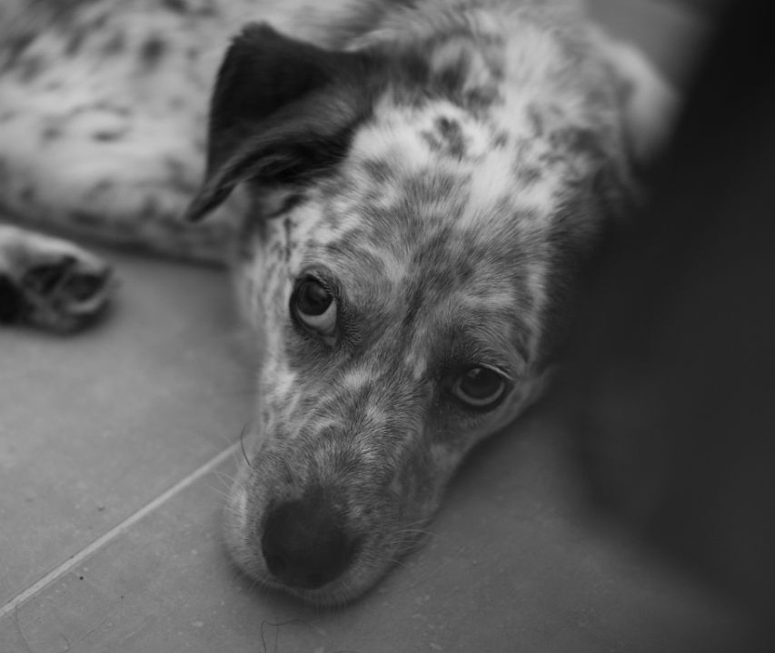
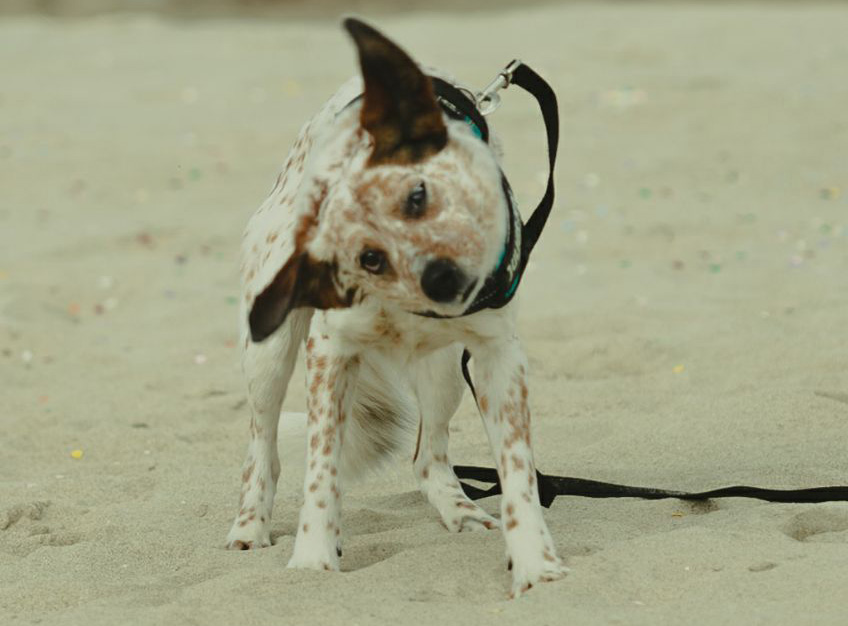

Il mio piccolo Astro
Astro è il mio amico a quattro zampe che ho deciso di prendere durante la fase iniziale del covid. Dopo aver visto delle foto di alcuni amici non potevo non adottarlo, con quelle orecchie tenerissime e quello sguardo da cane bastonato.

Mentre scrivo questo testo, si trova in mezzo alle gambe seduto sul mio piede. È un cagnolino fobico: nonostante diversi incontri con educatori cinofili e tanta pazienza, alcune cose lo spaventano ancora; ma va bene così.

Prima di lui, per ben quindici anni, la mia piccola Beauty è stata la compagna della mia infanzia, adolescenza e anche di più. Dopo di lei desideravo trovare un altro amico peloso. Spero di riuscire a far vivere ad Astro una vita serena, perché lui nel suo piccolo riesce a rendere migliore la mia.